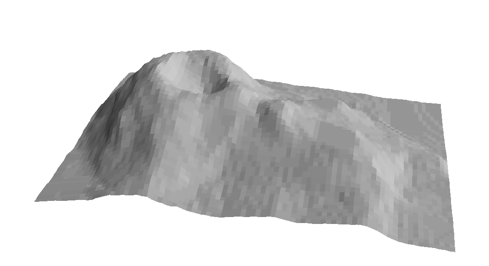
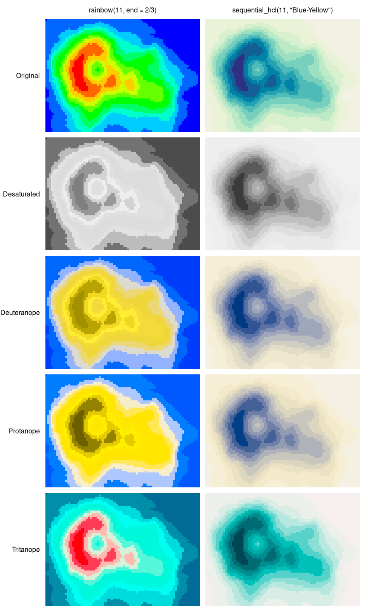

Color Vision Deficiency Emulation
color_vision_deficiency.RmdOverview
Different kinds of limitations can be emulated using the physiologically-based model for simulating color vision deficiency (CVD) of Machado, Oliveira, and Fernandes (2009): deuteranomaly (green cone cells defective), protanomaly (red cone cells defective), and tritanomaly (blue cone cells defective). While most other CVD simulations handle only dichromacy, where one of three cones is non-functional, Machado, Oliveira, and Fernandes (2009) provides a unified model of both dichromacy and anomalous trichromacy, where one cone has shifted spectral sensitivity. As anomalous trichromacy is the most common form of color vision deficiency, it is important to emulate along with the rarer, but more severe dichromacy.
The workhorse function to emulate color vision deficiencies is
simulate_cvd(), which can take any vector of valid R colors
and transform them according to a certain CVD transformation matrix and
transformation equation. The transformation matrices have been
established by Machado, Oliveira, and Fernandes
(2009) and are provided in objects
protanomaly_cvd, deutanomaly_cvd, and
tritanomaly_cvd. The convenience interfaces
deutan(), protan(), and tritan()
are the high-level functions for simulating the corresponding kind of
color blindness with a given severity (calling
simulate_cvd() internally). A severity of 1
corresponds to dichromacy, 0 to normal color vision, and
intermediate values to varying severities of anomalous trichromacy.
For further guidance on color blindness in relation to statistical graphics see Lumley (2006) which accompanies the R package dichromat (Lumley 2013) and is based on earlier emulation techniques (Viénot et al. 1995; Brettel, Viénot, and Mollon 1997; Viénot, Brettel, and Mollon 1999).
Illustration: Heatmap with sequential palette
To illustrate that poor color choices can severely reduce the
usefulness of a statistical graphic for readers with color vision
deficiencies, we employ the infamous RGB rainbow color palette in a
heatmap. In base R this can be generated by
rainbow(11, end = 2/3) ranging from red (for high values)
to blue (for low values).
The poor results for the RGB rainbow palette are contrasted with a
proper sequential palette ranging from dark blue to light yellow:
sequential_hcl(11, "Blue-Yellow").
The statistical graphic employed for illustration is a heatmap of the
well-known Maunga Whau volcano data from base R. This
heatmap is easily available as demoplot(x, "heatmap") where
x is the color vector to be used, e.g.,
rainbow(11, end = 2/3)## [1] "#FF0000" "#FF6600" "#FFCC00" "#CCFF00" "#66FF00" "#00FF00" "#00FF66"
## [8] "#00FFCC" "#00CCFF" "#0066FF" "#0000FF"## [1] "#5D4700" "#B58C01" "#FFD005" "#FFE408" "#FFC809" "#DBAB0A" "#C4B06D"
## [8] "#ACB5D0" "#7595FF" "#1D50FB" "#000CF7"and so on. To aid the interpretation of the heatmap a perspective display using only gray shades is included first, providing another intuitive display of what the terrain around Maunga Whau looks like.

Subsequently, all combinations of palette and color vision deficiency
are visualized. Additionally, a grayscale version is created with
desaturate().

This clearly shows how poorly the RGB rainbow performs, often giving quite misleading impressions of the terrain around Maunga Whau. In contrast, the HCL-based blue-yellow palette works reasonably well in all settings. The most important problem of the RGB rainbow is that it is not monotonic in luminance, making correct interpretation quite hard. Moreover, the red-green contrasts deteriorate substantially in the dichromatic emulations.
Illustration: Map with diverging palette
As another example for the poor performance of the RGB rainbow we
employ a shaded map. This is available as
demoplot(..., "map") and is based on county polygons for
Alabama, Georgia, and South Carolina along with an artifical variable
used for coloring.
Often the red-yellow-green RGB spectrum is used for a diverging
palette with yellow as the neutral value. In base R this can be
generated by rainbow(11, end = 1/3). However, this palette
has again a number of weaknesses, especially that the green-yellow part
of the palette almost collapses to the same color when desaturated or
when color blindness is emulated.
To illustrate that much more balanced palettes for the same purpose
are available the Geyser palette (mimicked from CARTO 2019) is adopted:
divergingx_hcl(11, "Geyser", rev = TRUE). This also goes
from red via yellow to a green/blue and hence needs the
divergingx_hcl() function (as opposed to
diverging_hcl() which always uses a neutral gray).

While many versions of the RGB rainbow displays are hard to read because they do not bring out any differences in the green-yellow arm of the palette, the HCL-based palette works reasonably well in all settings. Only the grayscale version cannot bring out the different arms of the palette. However, at least both directions of deviation are visible even if they cannot be distinguished. This is preferable to the RGB rainbow which hides all differences in the green-yellow arm of the palette. (However, if grayscale printing is desired a sequential rather than a diverging palette is probably necessary.)